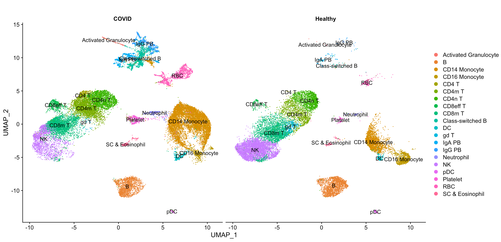
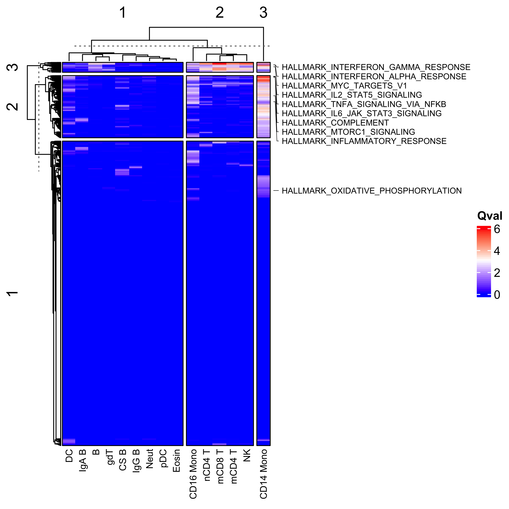

vignettes/disease_comparison.Rmd
disease_comparison.RmdHere we’re going to perform a systems level characterisation of pathway perturbations in a disease. Applying a systems level analysis of a disease using scRNA-seq data allows you to get a really good understanding of a few important aspects:
Because SCPA can be easily applied in a systems level way, it allows for the identification of the most relevant pathways and cell types in any given disease.
Let’s load in a few packages
library(SCPA)
library(Seurat)
library(tidyverse)
library(ComplexHeatmap)
library(circlize)
library(magrittr)And load in a dataset from Wilk, A…Blish, C that creates a single cell atlas of peripheral blood immune cells in COVID-19 patients. You can download this dataset here
Let’s have a quick look at the data, and get rid of any cell populations that aren’t represented in both healthy and disease datasets.
DimPlot(blood_atlas, label = T, group.by = "cell.type.fine", split.by = "Status") +
theme(aspect.ratio = 1)
Now we can pull all of the pathways that we want to compare. For this, we’re using a csv file that contains a combination of canonical pathways, gene ontology pathways, and regulatory pathways from MSigDB, and you can find this file here.
pathways <- "h_k_r_go_pid_reg_wik.csv"And let’s create an object with our cell types that we want to compare, and split the object by disease status.
cell_types <- unique(blood_atlas$cell.type.fine)
blood_atlas <- SplitObject(blood_atlas, split.by = "Status")Now we’ve formatted everything properly, we just need to loop SCPA
over all the cell types in the dataset. Here we’re using
seurat_extract to pull expression matrices from each cell
type, and then using these as the input to
compare_pathways. We’re using a load of pathways and cell
types here, so this may take a while. To make the downstream analysis
easier, we’re only going to keep the Pathway and qval columns from the
SCPA output, and then add the cell type to the column names, so we can
keep track of the qvals for each cell type.
scpa_out <- list()
for (i in cell_types) {
healthy <- seurat_extract(blood_atlas$Healthy,
meta1 = "cell.type.fine", value_meta1 = i)
covid <- seurat_extract(blood_atlas$COVID,
meta1 = "cell.type.fine", value_meta1 = i)
print(paste("comparing", i))
scpa_out[[i]] <- compare_pathways(list(healthy, covid), pathways) %>%
select(Pathway, qval) %>%
set_colnames(c("Pathway", paste(i, "qval", sep = "_")))
# For faster analysis with parallel processing, use 'parallel = TRUE' and 'cores = x' arguments
}Let’s combine the results from all cell types, and just take pathways with a qval of > 2 in any comparison
scpa_out <- scpa_out %>%
reduce(full_join, by = "Pathway") %>%
set_colnames(gsub(colnames(.), pattern = " ", replacement = "_")) %>%
select(c("Pathway", grep("_qval", colnames(.)))) %>%
filter_all(any_vars(. > 2)) %>%
column_to_rownames("Pathway")We can then take pathways that we want to highlight in the final plot
blood_paths <- c("HALLMARK_TNFA_SIGNALING_VIA_NFKB", "HALLMARK_INFLAMMATORY_RESPONSE",
"HALLMARK_COMPLEMENT", "HALLMARK_IL6_JAK_STAT3_SIGNALING",
"HALLMARK_IL2_STAT5_SIGNALING", "HALLMARK_INTERFERON_GAMMA_RESPONSE",
"HALLMARK_MTORC1_SIGNALING", "HALLMARK_INTERFERON_ALPHA_RESPONSE",
"HALLMARK_MYC_TARGETS_V1", "HALLMARK_OXIDATIVE_PHOSPHORYLATION")And create row annotations for the heatmap to highlight these pathways, and colour scale
position <- which(rownames(scpa_out) %in% blood_paths)
row_an <- rowAnnotation(Genes = anno_mark(at = which(rownames(scpa_out) %in% blood_paths),
labels = rownames(scpa_out)[position],
labels_gp = gpar(fontsize = 7),
link_width = unit(2.5, "mm"),
padding = unit(1, "mm"),
link_gp = gpar(lwd = 0.5)))
col_hm <- colorRamp2(colors = c("blue", "white", "red"), breaks = c(0, 3, 6))Now we have all the results, we can plot a heatmap of the qvals to get an idea of any broad patterns. Interestingly, we see a large dysregulation of pathways in CD14+ monocytes in the peripheral blood of COVID-19 patients, suggesting that these cell show the greatest deviation from CD14+ monocytes from healthy donors. These pathways include well defined immunological signatures in response to viral infection, including interferon response pathways, and complement cascades. We’ve just chosen to highlight a few on the heatmap below.
Heatmap(scpa_out,
col = col_hm,
name = "Qval",
show_row_names = F,
right_annotation = row_an,
column_names_gp = gpar(fontsize = 8),
border = T,
column_km = 3,
row_km = 3,
column_labels = c("CS B", "IgG B", "IgA B", "CD14 Mono", "mCD8 T", "mCD4 T",
"nCD4 T", "B", "NK", "Neut", "CD16 Mono", "gdT", "pDC", "Eosin", "DC"))